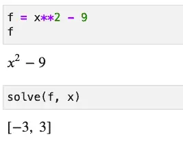
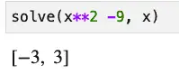
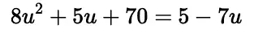
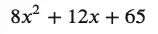
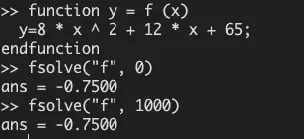
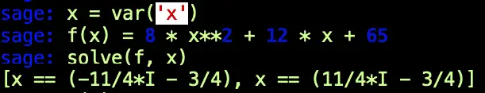
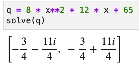

SciPy vs. SymPy for Symbolic Math: Let Us Never Speak of This Again
In a recent article about SymPy, I included a section on SymPy vs. SciPy. In it, I made the claim that SciPy where I said that it has excellent support for functionality that overlaps SymPy. I also made the qualified prediction in the conclusion that “Although I also resolved to spend more time researching and using SciPy, I’m not sure it will measure up to SymPy for the kind of interactive, educational, and exploratory work that I usually spend my time on.”
I want to make a much stronger statement in this article. Don’t use SciPy for symbolic math. Just don’t.
If you need to solve systems of linear equations, or if you have other tasks for which you think SciPy might be a good fit, then go ahead and use it. However, as a general computer algebra system for symbolic math, I strongly encourage you to find another solution: SymPy works well. SageMath also fits the bill nicely despite its quirky installer.
Why SymPy is Superior for Symbolic Math
Let’s drill down into why SciPy may not be the ideal choice for symbolic math. When I first got the ultimately wrong-headed idea to treat it as such a tool, I had managed to integrate and differentiate a function. However, what I sought to do next was to compare it point for point with the tasks I’d done in my SymPy article and quickly came to grief along the way. Let’s take a look at some things I tried to do.
In the SymPy article, I showed several operations one could do on a simple function – a difference of squares. I began by solving it. In SymPy, that’s simply a matter of passing the function to the solve method along with the variable for which you’re solving.

It almost couldn’t be simpler, but if you prefer a one-liner, here it is:

Now let’s try to do the same thing using the SciPy function, fsolve:
from scipy.optimize import fsolve
def f_scipy_difference_of_squares(x):
"""A simple difference of squares in Python"""
return x**2 - 9
fsolve(f_scipy_difference_of_squares, [0,0])
Output:
array([ 3., -3.])
We had to define the function here as a standard python function instead of an expression assigned to a variable, but that’s not too much onerous. However, we have to pass an array of estimated values to the fsolve function, so we need to think about how many roots we’re expecting in advance. Just passing a single zero will give you the wrong answer and only return one of the roots:
fsolve(f_scipy_difference_of_squares, 0)
Output:
array([3.])
OK, that required a little more thought up front than SymPy, which just figured out the number of roots and returned them. Still, a difference of squares is quadratic, so we should expect two roots. This isn’t a significant hurdle so far.
Our first non-linear function solved with SciPy worked out OK, so I tried a slightly more complex quadratic. I found this problem on Paul’s Notes when heading over to my favorite source for math problems with solutions.

This problem turns out to have the following two roots:

Imagining I could solve this with SciPy’s fsolve function as readily as I solved the simple difference of squares, I set it up as shown below. I used x as the single variable instead of u, and since both SymPy and SciPy’s solvers want the “zeroed” form of the equation (i.e., f(x) == 0), I canceled out the right-hand terms to arrive at this expression:

Implementing it in Python and using fsolve gave the following code and result:
def f_scipy_quadratic(x):
"""A quadadratic-formula solvable quadratic"""
return 8 * x**2 + 12 * x + 65
result = fsolve(f_scipy_quadratic, [0,0])
print(result)
Output:
[-0.75361538 -0.75361533]
The real part of the root, -3/4, is pretty close to the floating point values returned here. It’s possible, as suggested here, to get even closer by using scipy.optimize.root and passing “lm” as the method. This chooses an algorithm based on Levenberg-Marquardt. However, the complex portion of the value is not returned in any case.
Like fsolve in SciPy, Octave’s also only returned the real component of the root, but in Octave, the number converges much more closely to the correct value. In addition, the value returned in Octave does not depend on the starting input.

Even using the root function with the Levenberg-Marquardt algorithm specified, what you get still depends to some extent on what you specify as an initial value:

However, at least here the result is not as bad as SciPy’s fsolve:

That last one is way off, and there are cases where the function doesn’t even finish, depending on the estimate passed to it.
The Law of the Instrument, Revisited
I recently looked up an expression and found what I was looking for in this 1966 formulation by Abraham Maslow: “If the only tool you have is a hammer, it is tempting to treat everything as if it were a nail.” To keep my self-esteem intact, I’m going to suggest that my misbegotten journey of treating SciPy as a symbolic math tool stems from this corollary: “If you’ve been reviewing lots of hammers, everything starts to look like a hammer after a while.”
The cure of course in the case of a real nail is to use a real hammer. Both SageMath and SymPy give me an unequivocal right answer for my Paul’s Online Notes problem. Here it is in the sage terminal:

And here’s the same solution shown in SymPy:

Why This Isn’t An Anti-SciPy Post
I know it seems like I set out in this post to be critical of SciPy, but that certainly wasn’t my intent. SciPy is an awesome collection of tools and using a small sample drawn from the scipy.optimize module is really not fair. For example, SciPy handles linear algebra tasks quite competently, as this article shows.
Also, for the tasks it does well, it’s likely to do them much more quickly than the other alternatives discussed here. For example, returning to our difference of squares example that “everyone got right” from earlier, the %timeit benchmarks for solving that function are as follows:
| SciPy | 32 µs ± 438 ns per loop (mean ± std. dev. of 7 runs, 10,000 loops each) |
| SymPy | 427 µs ± 10.2 µs per loop (mean ± std. dev. of 7 runs, 1,000 loops each) |
| SageMath | 835 µs ± 11 µs per loop (mean ± std. dev. of 7 runs, 1000 loops each) |
Although I haven’t demonstrated it yet, I’d expect that for SciPy’s linalg module, the clear SciPy performance advantage would continue to hold true.
Note: for a good criticism of some finer points that I still missed in this article, see this Reddit comment.